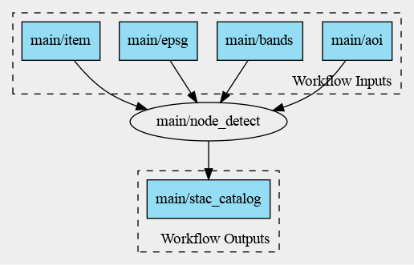

Water bodies detection
This learning module re-uses an Application Package asset that is described in the Mastering Earth Observation Application Packaging with CWL module.
In the context of the module, the Application Package is built and released by a Continuous Integration process running in GitHub and producing the releases found under https://github.com/eoap/mastering-app-package/releases/.
The paragraphs below provide an overview of the application packaged as a OGC Earth Observation Application Package.
Application overview
This application takes as input Copernicus Sentinel-2 or USSG Landsat-9 data and detects water bodies by applying the Otsu thresholding technique on the Normalized Difference Water Index (NDWI).
The NDWI is calculated with:
Typically, NDWI values of water bodies are larger than 0.2 and built-up features have positive values between 0 and 0.2.
Vegetation has much smaller NDWI values, which results in distinguishing vegetation from water bodies easier.
The NDWI values correspond to the following ranges:
| Range | Description |
|---|---|
| 0,2 - 1 | Water surface |
| 0.0 - 0,2 | Flooding, humidity |
| -0,3 - 0.0 | Moderate drought, non-aqueous surfaces |
| -1 - -0.3 | Drought, non-aqueous surfaces |
To ease the determination of the water surface/non water surface, the Ostu thresholding technique is used.
In the simplest form, the Otsu algorithm returns a single intensity threshold that separate pixels into two classes, foreground and background. This threshold is determined by minimizing intra-class intensity variance, or equivalently, by maximizing inter-class variance:

Application details
The application is a Python command line tool that takes a Sentinel-2 STAC item reference applies the crop over the area of interest for the radiometric bands green and NIR, the normalized difference, the Ostu threshold and finally creates a STAC catalog and items for the generated results.
This scenario is depicted below:
Application Package
The user packages the application as an Application Package to include a workflow that reads a Sentinel-2 STAC item references launches Python command line tool to detect the water bodies:

Dataset
The development and test dataset is made of two Sentinel-2 acquisitions:
| Acquisitions | ||
|---|---|---|
| Mission | Sentinel-2 | Sentinel-2 |
| Date | 2022-05-24 | 2021-07-13 |
| URL | S2B_10TFK_20210713_0_L2A | S2A_10TFK_20220524_0_L2A |
| Quicklook |  |
|
The execution scenario using the OGC API Processes processes several acquisitions, including the two above.